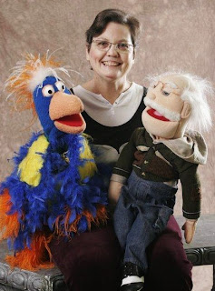

Still talking to herself...and many others
7/24/2011
{kind=link}

Teresa McCay surprised us with a nice note several days ago. Teresa was author of several dialogue books published by Maher Studios including Timely Topics and Cheerful Visits. But it has been several years since we have received an updated report on her vent work, so it was good to receive an update.
Teresa and her puppets live and work at the Love Lady Center where she provides art and story time for the large number of residents (about 450). Her puppets are an important part of her story time. She says at times some of the children shy from the dummies, but all, even the babies, love the puppets. Even after writing the dialogues from her early years as a ventriloquist, Teresa comments, "I never realized how important puppets were until I came here. They are a positive way to communicate love, faithfulness of God, family, education, and many ways I cannot put into words. Ventriloquism is very much a part of my daily life, and as long as I can, it will continue to be."
Teresa and her puppets live and work at the Love Lady Center where she provides art and story time for the large number of residents (about 450). Her puppets are an important part of her story time. She says at times some of the children shy from the dummies, but all, even the babies, love the puppets. Even after writing the dialogues from her early years as a ventriloquist, Teresa comments, "I never realized how important puppets were until I came here. They are a positive way to communicate love, faithfulness of God, family, education, and many ways I cannot put into words. Ventriloquism is very much a part of my daily life, and as long as I can, it will continue to be."